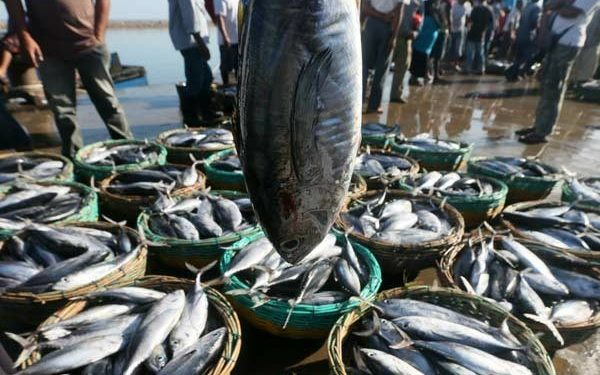

It is named after its bright yellow fins
Yellowfin tuna is highly regarded for its firm, flavorful flesh, making it a popular choice in cuisines
worldwide. It is often used in a variety of dishes, including sushi, sashimi, seared tuna steaks, and
grilled preparations
The flesh of yellowfin tuna has a slightly milder flavor compared to bluefin tuna but is still prized for its quality
No like bluefin tuna, yellowfin tuna is slightly smaller in size compared to bluefin tuna, typically reaching lengths of about 6
to 7 feet (1.8 to 2.1 meters) and weighing up to 400 pounds (180 kilograms)
Yellowfin vs Bluefin
Yellowfin tuna (Thunnus albacares) and bluefin tuna (Thunnus thynnus) are two different species of tuna, each
with its own characteristics and qualities
Here are some advantages of yellowfin tuna compared to bluefin
tuna:
1. Availability:
Yellowfin tuna tends to be more abundant and widely available compared to bluefin tuna
Yellowfin tuna can be found in tropical and subtropical waters around the world, including the Pacific,
Atlantic, and Indian Oceans
Bluefin tuna, on the other hand, is known faced overfishing concerns in certain
regions
2. Price:
Yellowfin tuna is generally more affordable compared to bluefin tuna
Bluefin tuna is highly
sought after, especially the prized and scarce varieties such as the bluefin tuna from the Mediterranean,
which can fetch very high prices in the market
3. Flavor and Texture:
Yellowfin tuna has a slightly milder flavor compared to bluefin tuna, which is
known for its rich, buttery taste
Yellowfin tuna has a firm texture and is often preferred for cooking
methods that require a firmer fish, such as grilling or searing
4. Sustainability:
Yellowfin tuna is considered to have a more sustainable population compared to
certain bluefin tuna stocks, which have been heavily overfished
Skipjack Tuna
Skipjack tuna, also known as Katsuwonus pelamis, is another species of tuna that is commonly found in tropical
and subtropical waters around the world
In Indonesian cuisine, skipjack tuna is often referred to as
"cakalang" or "ikan cakalang."

Skipjack tuna is smaller in size compared to bluefin and yellowfin tuna, typically reaching lengths of about 2
to 3 feet (60 to 90 centimeters) and weighing around 10 to 30 pounds (4.5 to 13.5 kilograms)
They have a streamlined body with metallic dark blue or black color on their back and a silvery-white belly
Skipjack tuna has a firm and meaty texture with a slightly stronger flavor compared to other tuna species
It is commonly used for grilling, smoking, and in stews, curries, and stir-fry dishes. Due to its robust flavor,
skipjack tuna is also popularly used in canned tuna production
Cakalang (skipjack tuna) is widely used in Indonesian cuisine, particularly in regions like North Sulawesi,
where it is considered a staple ingredient
It is often used in traditional dishes such as "Cakalang Fufu,"
which is a slow-cooked skipjack tuna with various spices, and "Nasi Kuning Manado," which is yellow rice
served with shredded cakalang
Tuna Saku
Tuna saku, also known as tuna loin or tuna block, refers to a specific cut of tuna meat
commonly used in the culinary industry
It is a rectangular or cylindrical piece of tuna that is typically
obtained from larger tuna species like yellowfin or bluefin tuna
Here are some key details about tuna saku:
Tuna saku is derived from the loin section of the tuna, which is known for its firm texture and rich flavor
The loins are carefully trimmed and cut into consistent rectangular or cylindrical shapes, making them ideal
for various culinary applications
Size and Shape: Tuna saku comes in different sizes, but they are generally uniform and compact. The
dimensions can vary, but they typically have a length of about 8 to 12 inches (20 to 30 centimeters), a width
of 2 to 3 inches (5 to 7.5 centimeters), and a thickness of 1 to 2 inches (2.5 to 5 centimeters). The specific
size can be customized based on culinary requirements
Quality and Freshness: Tuna saku is highly regarded for its premium quality. It is typically sourced
from top-grade tuna species and selected for its freshness and desirable attributes. The meat should have a
vibrant color, firm texture, and minimal bruising or discoloration
Culinary Uses: Tuna saku is a versatile ingredient in the kitchen and is widely used in both raw and
cooked preparations
It is commonly used in sushi, sashimi, and poke bowls due to its ability to hold its
shape and be easily sliced into thin, uniform pieces
Tuna saku is also suitable for grilling, searing, or pan-frying, where it can be cooked to various degrees of
doneness while retaining its moistness and flavor
Availability: Tuna saku is available from reputable seafood suppliers and is commonly found in high-end
seafood markets, sushi restaurants, and professional kitchens. It is often purchased in bulk quantities to
ensure consistent supply and maintain quality
Yellowfin Minced Tuna / Negitoro
Yellowfin tuna negitoro, also known as minced tuna, is a popular dish in Japanese cuisine
It typically
consists of finely minced or chopped yellowfin tuna mixed with finely chopped scallions (green onions)
The name "negitoro" is derived from two Japanese words: "negi," which means scallions, and "toro," which
refers to the fatty part of the tuna
To prepare yellowfin tuna negitoro, the yellowfin tuna is usually filleted and then minced using a sharp knife
or a food processor
The minced tuna is then mixed with finely chopped scallions, which add a fresh and
onion-like flavor to the dish
The ratio of tuna to scallions can vary depending on personal preference
Yellowfin tuna is known for its rich flavor and firm texture, making it an excellent choice for negitoro
It
is important to use fresh and high-quality tuna when making this dish to ensure the best taste and texture
Yellowfin tuna negitoro is commonly used as a topping or filling in various Japanese dishes
It is a popular
ingredient in sushi rolls, where it is often wrapped in seaweed (nori) along with rice and other ingredients
It can also be served on top of rice bowls (donburi), mixed with soy sauce and served as a dip for tempura or
sashimi, or used as a filling for hand rolls (temaki)
Yellowfin tuna negitoro is a delicious and versatile dish that showcases the flavors of fresh tuna and
scallions, offering a delightful combination of tastes and textures commonly enjoyed in Japanese cuisine
Buy Premium Quality Pacific Yellowfin Tuna and Skipjack in Bulk From Indo5export.com
Indo5export.com is an online wholesale export trading company that offers a convenient solution for businesses to find and export Indonesia products